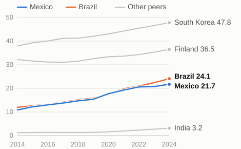
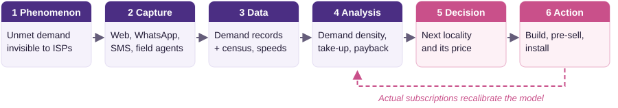

Regional internet providers in Mexico decide where to extend fixed broadband without seeing real demand. ConectaMapa lets households and small businesses register unmet demand and helps ISPs decide which locality to connect next, and at what price.
Actor: the expansion manager of a regional ISP (small fibre or fixed-wireless operator). Decision: which locality to build next quarter and at what monthly price. Phenomenon: unmet fixed-broadband demand at locality level, invisible to providers. Consequence: viable localities stay unconnected and ISPs build where take-up disappoints.
Since 2021, Brazil has pulled ahead of Mexico
Fixed broadband subscriptions per 100 people, 2014–2024

Source: ITU via World Bank WDI (IT.NET.BBND.P2), Part I raw data.

The ranking shifts from "where many people live" to "where many people will subscribe": a small locality with high registered demand can move ahead of a large one.
| Level | Question | Technique | Decision supported |
|---|---|---|---|
| Descriptive | How much unmet demand did each locality register? | Rates per 100 households, heat maps | Shortlist for field survey |
| Diagnostic | Why is demand unmet where a provider exists? | Segmentation, regression with controls | New network, cheaper plan or upgrade |
| Predictive | If we build in X, how many will subscribe in 6 months? | Classification models validated on past builds | Go / no-go per locality |
| Prescriptive | With budget B and crews, which localities and prices? | Integer optimization, scenarios | Quarterly rollout plan |
A demand map shows stated interest; prediction must learn who actually pays; prescription adds constraints and an objective.
Four digital fields (telecommunications, digital communication, computer technology, IT methods for management), by applicant's origin. Mexico is last and falling: ≈89 publications a year in 2021–2023, −21% vs 2014–2016; South Korea publishes ≈1,500× more per person. Patents protect novel, inventive, industrially applicable technical solutions (LFPPI Art. 48); business methods and software as such are excluded (Art. 47). ConectaMapa's edge is data and network effects, not IP. A possible inventive component is a method that fuses speed tests, census geodata and network-design parameters to estimate a locality's viability. Counts measure invention attempts, not adoption or success.
| Origin | Per year | Per million people |
|---|---|---|
| South Korea | 54,245 | 1,048.9 |
| Finland | 3,941 | 708.7 |
| India | 5,501 | 3.9 |
| Brazil | 315 | 1.5 |
| Mexico | 89 | 0.7 |
2021–2023 average, four fields (2024 incomplete). WIPO IP Statistics, consulted 29 Sep 2026; population: World Bank. Evidence: part2/wipo/.
Model: marketplace + SaaS + data-driven. The price-sensitive side (households) is free; the side that benefits and can pay (ISPs) pays. We do not use advertising, because it would erode trust and privacy.
Multi-sided platform: households ↔ ISPs, with municipalities as co-funders. Rules: one verified registration per household; ISPs publish price, speed and date before seeing contacts; consent-based data sharing, no resale; post-install speed test and ratings.
Grows slowly: cloud compute and storage, software, model training. Keeps growing: SMS/WhatsApp messages, field agents in hard-to-reach areas, support, fraud verification, B2B sales, data-protection compliance. The digital layer scales; the physical networks ISPs must build do not. Scalability is low marginal cost, not zero cost.
Physical elements: household phones; cloud servers with cooling; fibre, optical terminals or radios and towers; electricity and backup power. Material cost: fibre per km plus equipment per home. Energy cost: network equipment runs 24/7, and rural areas need batteries, solar or diesel. Externality: e-waste from replaced routers and emissions from diesel backup.
One system, two directions: Mexico's electricity grid. AI helps: forecasts of demand and solar output let the grid operator (e.g., CENACE) keep fewer fossil plants in reserve; ISPs on the same grid put idle radios to sleep at night. AI demands: a typical AI data centre uses as much electricity as 100,000 households (IEA); new ones on Mexico's grid compete for the capacity rural networks need. We use a simple registration form, not an LLM chatbot.
| Problem | Regional ISPs expand fixed broadband without seeing real demand; viable underserved localities stay unconnected. |
| Evidence | 21.7 subscriptions per 100 people (4th of 5); slower growth than Brazil since 2021; ≈8.6 M households without internet; strong state-level gaps; regional ISPs hold 63.3% of Brazil's fixed broadband. |
| Strategy | Online and offline registration joined with census and speed data; descriptive → diagnostic → predictive → prescriptive analysis. |
| Decision | Which locality an ISP connects next and at what price; where municipalities co-invest. |
| Value | Households and small businesses (connection), ISPs (lower risk and acquisition cost), municipalities (evidence). |
| Business model | Free for households; SaaS + success fee for ISPs; aggregated reports for the public sector. |
| Limitations | ISPs lacking capital; permits and rights of way; fake demand; cold start; localities never viable without subsidy; privacy incidents; regulatory change. |
Sources: ITU via World Bank WDI (IT.NET.BBND.P2, IT.NET.USER.ZS), Part I raw data · INEGI, ENDUTIH 2025 (Reporte de Resultados 19/26, 16 Jun 2026) · Anatel, Relatório de Monitoramento da Competição 4T2025 · IEA, Energy and AI (2025) · Ley Federal de Protección a la Propiedad Industrial (2020), Arts. 47–48 · WIPO IP Statistics Data Center, 4a Patent publications by technology (consulted 29 Sep 2026) · World Bank WDI, population (SP.POP.TOTL). Full analysis: Annex (Team1_Part2_Annex.pdf) · traceability: part2/evidence_log.csv.